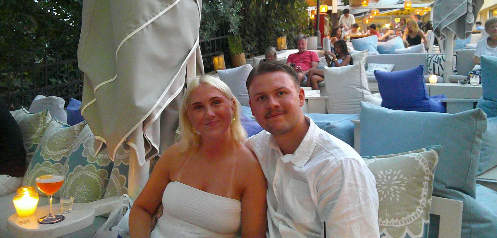
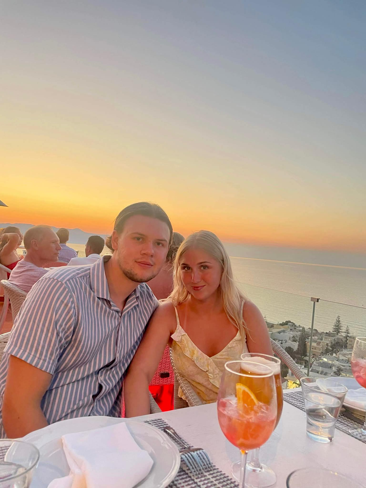
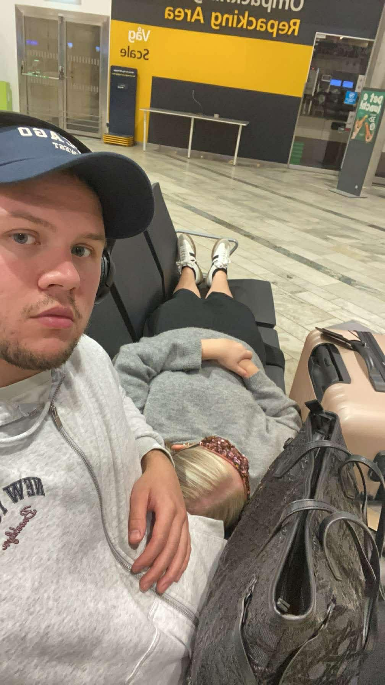
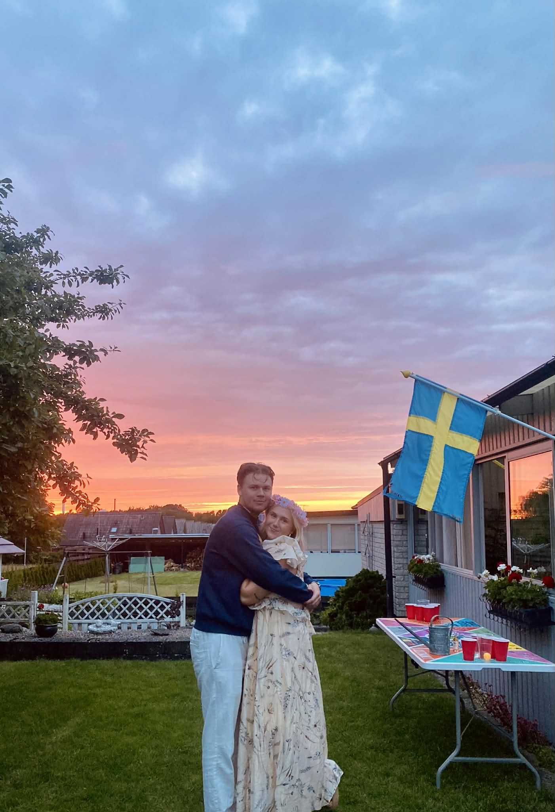

Klädkod
Klä dig i något du känner dig fin och bekväm i – det viktigaste för oss är att du trivs! Vi ser gärna att man bär kavaj eller kostym. För kvinnor ber vi vänligen att undvika färgerna vitt, blått och rött. För den som vill matcha eller inspireras går bröllopets färgtema och dukning i olika nyanser av orange, korall och rosa.

Parkering Under Dagen

För dig som vill parkera bilen under dagen rekommenderas Östra
torget, Smedjan eller Atollen. Dessa ligger närmast både
kyrkan där vigseln äger rum och festlokalen där mottagningen
kommer att hållas.
Observera att Södra vägen i Jönköping är avstängd för er
som tar den vägen!
För dig som vill parkera
Östra Torget
(3 minuter gång) - Utomhusparkering - öppet 24h.
Smedjan
(6 minuter gång) - Parkeringshus - stänger 23:59
Atollen
(7 minuter gång) - Parkeringshus - stänger 23:59
Ta Dig Kollektivt
För dig som åker kollektivt under dagen finns det flera bra
möjligheter att ta sig till området med buss. Flera
hållplatser ligger i närheten och listas nedan. För långväga
gäster ligger även Jönköping Resecentrum relativt nära, med en
promenad på cirka 14 minuter till kyrkan och festlokalen.
Närmaste hållplats för dig som åker buss
Östra Torget
(4 minuter gång)
Stadsbiblioteket
(5 minuter gång)
Jönköping Östra Centrum
(7 minuter gång)

Hålla Tal

För dig som vill hålla tal ber vi dig fylla i följande
formulär. Att hålla tal måste innebära att du håller ett ypiskt
vanligt tal, det kan också inefatta någon rolig aktivitet Men
för att visa hänsyn till alla och för att vi inte ska lyssna
på tal hel natten har vi valt att sätta gränser för ett
vanligt tal till ca 5 min. Vill man gå över detta får man
kontakta toastmasters. Kontak uppfigteerna hittar ni under
fliken kontakt.
Bra att veta
Vanligt tal - ca 5 minuter
Längre tal eller aktivitet
- Kontakta Toastmasters